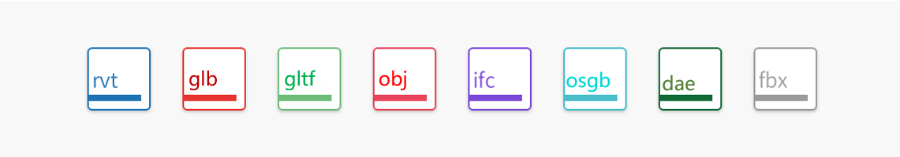
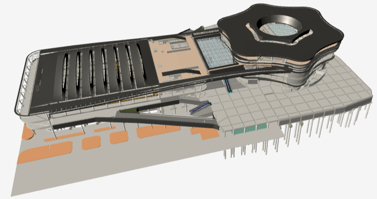
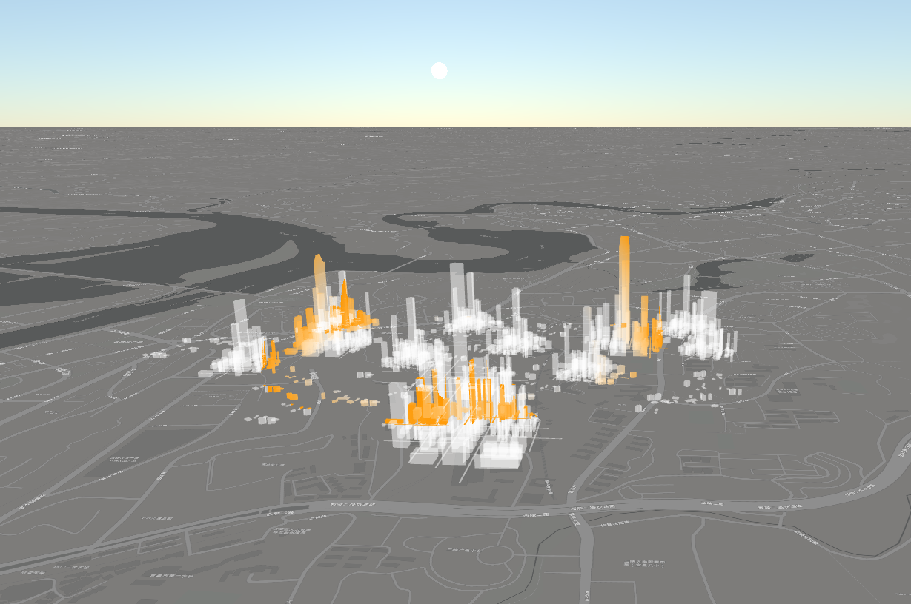

优秀的轻量化算法带来高压缩比，哪怕是集成显卡也能流畅体验。
桌面端、浏览器、移动端一体化。一次开发，多端同时体验。
提供轻量化插件、轻量化服务器，支持私有化部署，保障BIM数据的安全性。


通过几何复用与边塌陷算法减少三维数据体量，采用业界最新的计算机图形学数据压缩技术，提高模型的轻量化及压缩比。
融合了实例化网格、几何合并、视锥剔除等多种前端优化方案，实现渲染性能与内存占用的最佳平衡。
丰富的示例代码、详尽的API文档助力快速上手，内置面向设计协同和智慧运维领域的多种UI控件，开箱即用。
融合点光源、射线光源、场景光源、大气光源等多种光照效果，结合Gamma校正产生更加细腻的多源光照效果。
支持模型导出着色模式/真实模式。真实模型下保留构件材质，通过PBR技术完美再现木材、金属、玻璃、塑料、水泥等多种材质质感。
无论是哪个LOD精度的轻量化处理，采用优秀的顶点法线可以保障模型曲面的细腻光滑，避免网格碎片观感。

GIS和BIM采用同一个引擎，无缝融合。
支持模型建筑部分入地和地表透明。
支持大面积倾斜摄影数据的渲染。